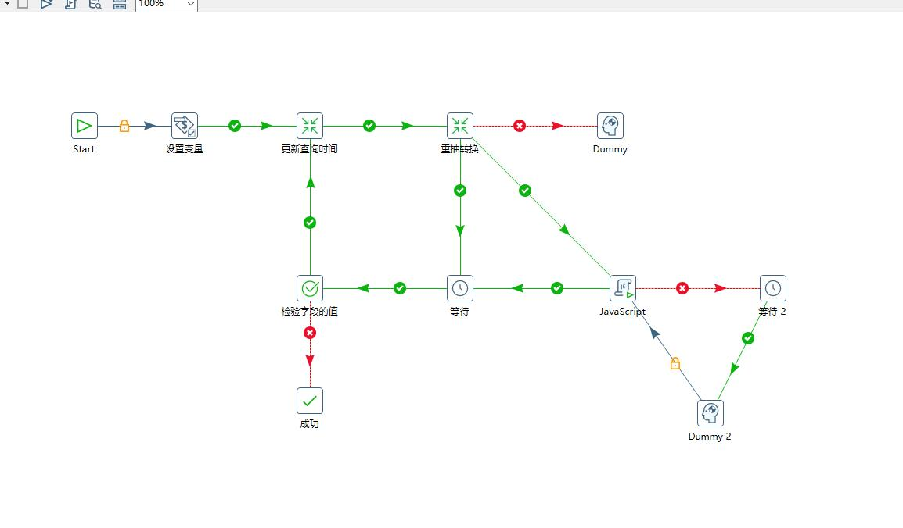
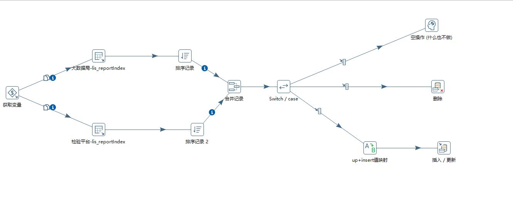

写在前面
为了将MSSqlserver数据传输至MySql数据库，一开始的选择有很多,类似DataX、ES，但是碍于运行环境是windows server 2012,且服务器环境不方便更改，查阅一番后，决定使用kettle进行数据的同步。
- 环境
- 系统：windows server 2012R2 64位
- 内存：8GB
- JDK：1.8
kettle配置统一参数
一、kettle的常用配置文件说明：
${user.home}表示WINDOWS的当前用户的文档文件夹，在C:\Users文件夹下${user.home}/ .kettle /repositories.xml: 该文件保存了用户设置的所有资源库信息,包括资源库名称,资源库需要的数据库连接参数等。该文件中定义的资源库将显示在spoon启动后出现的选择资源库下拉列表中,注意该文件的编码是UTF-8，资源库的名称尽量使用英文。${user.home}/ kettle/kettle.properties: 该文件保存了转换或作业中需要的变量, spoon启动后会自动加载该文件里定义的变量。${user.home}/.kettle/shared.xml: 该文件里保存了共享对象,共享对象可以是Database connections, Steps,Slave servers ,Partition schemas ,Cluster schemas。对象共享实质上就是将对象序列化的过程, spoon启动时,会加载shared.xml文件中定义的所有对象。lib\kettle-engine.jar\kettle-jobs.xml: 该文件中定义了Spoon启动时需要加载的作业项。
lib\kettle-engine.jarkettle-partition-plugins.xml: 该文件中定义了Spoon启动时需要加载的分区插件。
lib\kettle-engine.jar\kettle- plugins.xml: 该文件中定义了Spoon启动时步骤和作业项插件的加载路径。lib\kettle-engine.jar\kettle-steps.xml: 该文件中定义了Spoon启动时需要加载的转换步骤。
二、修改repositories.xml的位置
找到kettle所在文件夹下的Spoon.bat 文件,在里面查找出Kettle home所在的代码段,在 cd %KETTLE_DIR%代码上一行加上代码：set KETTLE_HOME=D:/AAA/BBB/CCC
- 如上，表示把文件重新等位到D:/AAA/BBB/CCC这个文件夹下。(注意:文件夹的斜杠和WINDOWS的目录斜杠是反的）
- 复制
${user.home}文件夹下的 .kettle 文件夹到D:/AAA/BBB/CCC目录下。 - 启动kettle程序。
参考：
Kettle日常使用汇总整理
Kettle使用统一的数据库配置
kettle学习笔记10—配置文件的使用
Kettle环境配置-kettle.properties
部份配置:
kettle配置作业、转换
参考：Kettle—使用手册
在配置完成后,执行作业的方式有两种：
- 使用spoon.bat打开UI程序进行执行
- 优点：作业执行很稳定，不会异常退出。
- 缺点：吃内存，配置不高的服务器可能压力大。懂不懂1GB起步。😓
- 使用Kitchen.bat脚本执行作业
- 优点：可以结合windows的任务执行计划程序进行定时启动作业，占用内存少，完成后自动退出。
- 缺点：一些耗时长的任务会有闪退的情况，或者数据量太大，执行时只取了一部分，会造成数据丢失。
配置重抽作业的逻辑
初始化时在作业里设置开始时间、结束时间变量值，执行转换前判断变量值，未到时间点，执行转换。执行一次转换后，更新变量，循环判断，实现重抽的需求。
作业流程配置:

转换流程配置：

更新时间变量JavaScript代码：
1 | //Script here |
定时启动无界面kettle任务
使用CMD脚本+windows任务计划程序实现定时启动作业执行。耗时在2小时以内的作业可以使用脚本方式，执行时间长的作业最好使用spoon窗口程序执行，不会存在执行一半退出的情况。
bat文件保存要按ANSI编码进行保存
1 | @REM @echo off |
Kitchen.bat参数详细说明：https://help.hitachivantara.com/Documentation/Pentaho/9.1/Products/Use_Command_Line_Tools_to_Run_Transformations_and_Jobs
参考资料
Kettle系列教程-第一章
kettle-数据同步比较数据（删除更新）
Kettle之定时运行Job
kettle教程—kettle作业调度，根据更新时间增量更新
Kettle实现循环增量抽取数据
Learn About the PDI Client (Spoon)-官方文档
Use Command Line Tools to Run Transformations and Jobs